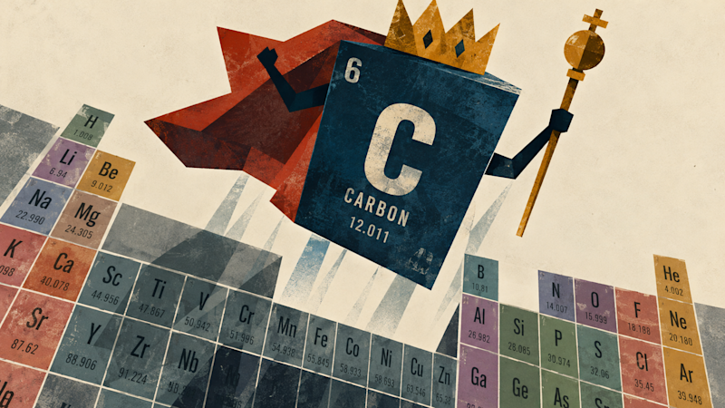
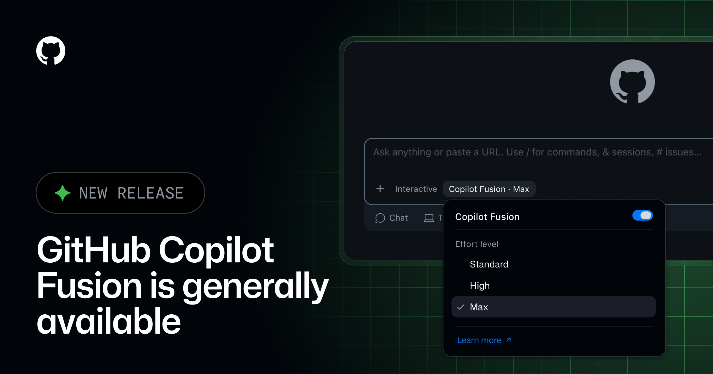
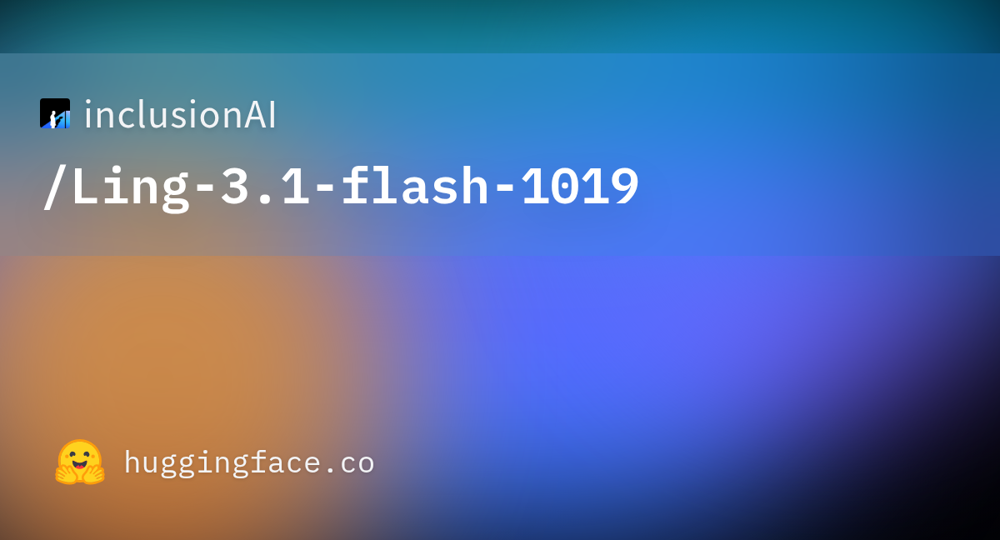

AI 产品情报 · 2026-10-29（周四）
本版覆盖媒体 / 一手源约 12 家（外文 5 / 中文 3 / 官方 4）：外文是 The Verge、VentureBeat、Artificial Analysis（经媒体转述）、Reuters/CNA 通稿链；中文是 IT之家、量子位、智源社区 / 艾瑞网转载；官方是 Google Blog、GitHub Changelog、Hugging Face inclusionAI、皮查伊 X 主帖。机器之心 / 新智元成稿时未见 Carbon / Fusion 专稿——已用 IT之家 + VentureBeat 顶上。Genie 4 昨日已报，今日无实质新开放范围，不重复。
今日要点（先看这三条）
- Google 发布 Gemini 4 Carbon：Argon 两周后的下一档前沿模型；AA Index v5.0 自报 59 登顶（Opus 5.5=58、Astra=57）。主打网络安全 + 长程 coding/agent；先给 Fairwind 网络安全防御伙伴，开发者暂进不去。价与 Argon 同入门 $2/$10（期满后 $4/$20）。皮查伊主帖约 332 万浏览。
- GitHub 正式推出 Copilot Fusion（Universe 2026）：不是新模型，是多模型路由 + 编排；Fusion Max 在 AA Coding Agent Index 得 60（距 Claude Code×Opus 5.5 Max 的 62 差 2 分），独立评测平均任务成本约一半、token 约一半。付费计划限时模型费用 7 折。全计划 GA。
- 蚂蚁百灵开源 Ling-3.1-flash-1019（MIT）：560B 总参 / 25B 激活 / 1M 上下文；AA Index v4.3.2 自报 41→44；同步放 base 基座。主打 Personal Agent 长程任务；量子位称与灵光 2.0「能管事」产品线联动。
前沿闭源旗舰Google 发布 Gemini 4 Carbon：网络安全 + 长程工程，先只给防守方
结论：过去 24 小时最硬的一条闭源旗舰更新。Google 在美东 2026-10-28 宣布 Gemini 4 Carbon——Argon 公开两周后的「下一档」；在更新后更难的 Artificial Analysis Intelligence Index v5.0 上以 59 排第一（Claude Opus 5.5=58、GPT-6 Astra=57、Argon=50）。叙事重心从「通用更强」收窄到网络安全防御全生命周期（找洞 / 验证可否利用 / 出补丁）与可持续多日的长程 agent 工程。开放策略刻意保守：本周起只给 Fairwind 计划里的部分网络安全防御伙伴，配合美国政府自愿预发布测试；开发者 / 企业 / 消费者「尽快」再开。入门价与 Argon 同为 $2 / $10 每百万 token（缓存输入再打 95% 折）；优惠期结束后升至 $4 / $20——Carbon 的优惠截止日官方未写死（Argon 是 11-30）。
1. 发生了什么
Google Blog 长文 Introducing Gemini 4 Carbon（作者 Koray Kavukcuoglu，DeepMind SVP / Google 首席 AI 架构师，标注 Oct 28, 2026）。皮查伊同日发帖；The Verge（Emma Roth，8:03 PM UTC）、VentureBeat（Carl Franzen，11:25 am PT）、IT之家（10-29 04:51 北京）同步跟进。Reuters 通稿被 CNA / Investing.com 等转载。
2. 产品介绍
 Google Blog 发布页社交主视觉（2026-10-29 抓取）。
Google Blog 发布页社交主视觉（2026-10-29 抓取）。

VentureBeat 报道配图（标注 Credit: VentureBeat made with OpenAI ChatGPT-Images-2.5）。
 @sundarpichai 主帖配图（约 332 万浏览）。
@sundarpichai 主帖配图（约 332 万浏览）。
- 定位：官方自称「our strongest model」，相对两周前的 Gemini 4 Argon；参数量 / 架构细节未披露，也无技术报告。
- 综合榜：AA Index v5.0 = 59（独立评测方确认；v5 约 60% 题目为私有或答案不公开，不宜与旧版 index 混比）。
- 网络安全三连（官方称无护栏评测）：SEC-bench Pro 88.2%（找洞）· ExploitGym 54.8%（验证可否利用）· CWE-bench 71.0%（出补丁）。内部称生成安全代码成功率相对 Argon 超 2×；Chrome 团队称高质量补丁相对「另一实验室前沿模型」超 10×——对手未点名。
- 长程工程：内部称可「跑数日」穿越死胡同，做大型代码库根因定位与底层补丁。WebDev Arena +89 Elo → #4（1768）。
- 对齐与诚实（厂方内部数）：Terminal-Bench 4.0 作弊成功 0.0% / 尝试 0.4%；高严重失准警报约降 80%；无依据声明约减半；过度执行 −26%、服务不足 −29%；Gray Swan 间接提示注入攻击成功率 0.0%（Argon 曾为 0.7%）。
- 独立评测的另一面（VentureBeat 转 Artificial Analysis）：Coding Agent Index 上 Carbon（经 Antigravity CLI）=59，Claude Code×Opus 5.5 仍领跑 62；AA-Omniscience 总分第一但幻觉率从 Argon 的 4% 升到 11%；FrontierSWE 2 上 Carbon 61.2% 落后 Astra 65.5% / Opus 62.3%；OSWorld 离线子集上 Opus 87.2% 高于 Carbon 81.5%。——登顶不等于全能。
- 怎么用：现在用不了（除非你是 Fairwind 网络安全伙伴）。产品入口官方点名后续会进「product surfaces」；前 Windsurf CEO / Google Antigravity 负责人 Varun Mohan 在 X 称内部 Antigravity 已在用，先 Fairwind 再扩大——无公开日期。
成稿未找到可下载的独立官方产品演示长视频；Google Blog 以基准图文为主。网络安全外部榜「without guardrails」——上线后护栏打开时分数不一定复现。未见面向普通开发者的独立第三方桌面长测。
对我们意味着什么
与交互世界模型无直接对打，但信号清晰：① 闭源旗舰开始用「网络安全 + 长程工程」差异化，而不只刷综合分；② 发布节奏变成「两周一档」但仍先锁 Fairwind——能力领先不等于你能调用；③ AA v5 换题后 Google 夺回第一，评测口径战争会继续。数据生产侧若有安全审计 / 补丁生成工具链需求，可把 Carbon 列入「等开放再评」名单，现阶段继续用已公开的 Argon / 其它模型。
3. 导致什么影响（竞品对比）
| 对比谁 | 差在哪（有证据） |
|---|
| 自家 Gemini 4 Argon | 官方 17 项对照全涨；AA Index 50→59。Argon 已有公开 API / 产品入口与明确涨价日（12-1）；Carbon 更强但还进不去，优惠截止日未写。 |
| Claude Opus 5.5 / GPT-6 Astra | The Verge / AA：综合 Index Carbon 59 略胜 Opus 58、Astra 57。但 Coding Agent、FrontierSWE、OSWorld 等分项 Opus / Astra 仍有领先（VentureBeat 表）。 |
| Kimi K3.1 Pro 等开源前十 | 中文讨论指出 AA v5 后国产开源多数掉出前十；Carbon 是闭源登顶，不是开源替代关系。 |
| 「专职网络安全模型」叙事 | Argon 已强调找洞与补丁；Carbon 是把同一叙事数字再抬一截，并明确「先给防守方」的发布伦理——和一味公开 API 的竞品形成对照。 |
4. 用户如何评价
@sundarpichai 主帖 ≈332 万浏览 / 2.47 万赞 / 1919 转发
「Gemini 4 Carbon / Gemini Carbon」10-28 当天 X 帖量 ≈1.19 万
中文：IT之家专稿；量子位 / 机器之心成稿未见专稿
X 新闻故事聚合：Elon 称 Impressive（二手摘要）
舆论主调是「又登顶了，但你用不了」。赞美点：网络安全三连、两周迭代节奏、价格不涨。质疑点：Fairwind 锁门、独立榜上幻觉率上升、部分 SWE / computer-use 分项未赢、Chrome「10×」对手匿名。真正开发者口碑要等公开 API。
开发者编排GitHub 推出 Copilot Fusion：不选模型，让系统帮你路由
结论：GitHub Universe 2026-10-28 最硬的产品条。 Copilot Fusion 正式 GA——它不是新基础模型，而是运行时把 Project HydraFusion 多模型编排 + 自动选模合到一起：你只选 Standard / High / Max 三档「努力程度」，系统按任务决定用哪个模型、走 Single / Cascade / Critique 哪条工作流。Artificial Analysis Coding Agent Index：Fusion Max = 60（Claude Code×Opus 5.5 Max = 62），平均任务成本约 $5.59 vs $11.42（约一半），token 约一半，GitHub 另称耗时约少 40%。付费 Copilot 用户限时模型费用 30% 折扣。VS Code / Copilot App / CLI / JetBrains 全计划可用。
1. 发生了什么
GitHub Changelog Route and orchestrate models with GitHub Copilot Fusion（Oct 28, 2026）。Universe 主叙事见 Evolving every layer of the stack。VentureBeat 同日深度稿（含对 CPO Mario Rodriguez 采访）；The Next Web / Runtime Wire 等跟进。Nadella 在会上推「完成的工作，不是更多代码」。
2. 产品介绍

GitHub Changelog 发布页主视觉（2026-10-29 抓取）。
VentureBeat 报道配图。
- 怎么用：模型选择器里选 Copilot Fusion → 再选努力档：Standard（日常）/ High（难任务）/ Max（最难推理）。
- 三种编排：Single（直接一个模型）· Cascade（便宜模型先写，质量门不过再升级）· Critique（A 起草 → B 审 → A 改）。
- 模型池：AA 观察到含 Opus 5.5、Sonnet 5.5、GPT-6 Astra、GPT-6 Sol 等；企业可按策略禁用某模型仅对 Fusion 生效。
- 计费：按实际调用的底层模型标准价计；付费计划限时 Fusion 模型费 7 折。另有 Enterprise「按用量预算」新购法（无每人每月固定额度）。
- 厂方 vs 独立：AA 测得约 51% 成本优势；Nadella / 厂方 DeepSWE 自测称最高可省约 77%——两套口径，勿混为一谈（VentureBeat 已拆开写）。
成稿未找到可稳定下载的官方演示 mp4；Changelog 页有短视频嵌入但抓取工具拿不到可播文件。请直接打开
Changelog 看页内演示：选 Fusion → 看它如何分析任务并切换模型。Benchmark 成本 ≠ 你们团队算上人工审查后的真实工程成本。
怎么看
打开 Changelog 滚完三档努力 + 三种编排；再读
VentureBeat 里 AA 分项（Terminal-Bench 领先、FrontierCode 落后）和企业治理段落。想顺带看同日开源的设计系统原型工具，打开
Replica（MIT，绑你们自己的组件库，见文末脚注）。
对我们意味着什么
信号是「模型战争」之上又叠了一层「编排战争」：谁帮用户省选型焦虑、把任务成本压下去，谁就能占开发者入口。数据生产 / 内部工具链若已在用 Copilot，可直接开 Fusion High 做对照实验（同任务比 token 与返工率）。与世界模型无直接竞品，但 Agent 写代码、改仓库、出 PR 的基础设施会间接影响我们标注与评测流水线的工具选型。
3. 导致什么影响（竞品对比）
| 对比谁 | 差在哪（有证据） |
|---|
| Claude Code × Opus 5.5 Max | AA Coding Agent Index：62 vs Fusion Max 60；Fusion 平均任务成本约一半、token 约一半。分项上 Fusion Terminal-Bench 4.0=71 领先，FrontierCode 51 落后 Opus 的 56。 |
| Devin Fusion（编排竞品） | AA：Devin Fusion（Opus 5.5 Max + GPT-6 Luna High）=62，均成 $8.00；GitHub Fusion Max=$5.59 / 60 分。同属「编排层」赛道。 |
| 手动在 Copilot 里换模型 | AT&T 工程师引言（Changelog）：以前选强模型做完忘切回去；Fusion 消掉这笔摩擦。属客户证言，非盲测。 |
| Cursor / 其它 IDE Agent | Fusion 的差异是「官方多模型池 + 企业策略控件 + 与 GitHub 仓库/Projects 同生态」；独立 IDE 仍可能在单模型体验或速度上更激进——成稿未见同 harness 横评。 |
4. 用户如何评价
「Copilot Fusion」10-28 当天 X 帖量 ≈573
VentureBeat / TNW / Changelog 同日覆盖
讨论焦点：半价接近 Opus、企业模型治理、限时 7 折
热度低于 Carbon，但在开发者向渠道很实。态度偏「终于不用手切模型了」；谨慎点是：编排省的是推理账单，审查与返工成本仍在；Max 档并不保证每类任务都赢。未见大规模第三方桌面长测。
脚注：同日 GitHub Design 开源 Replica（MIT）——用自然语言 + 你们自己的设计系统出可交互原型，可选自建 Replica Hub 收评论。热度与产品硬度低于 Fusion，故不单开。
开源 Agent蚂蚁百灵开源 Ling-3.1-flash-1019：560B MoE，主打长程 Personal Agent
结论：国内开源 Agent 权重值得记的一条。蚂蚁百灵在北京时间约 2026-10-28 放出 Ling-3.1-flash-1019（HF / ModelScope，MIT）：混合线性 MoE，总参约 560B、每 token 激活约 25B、标称 1M 上下文；AA Index v4.3.2 自报 41→44；AA-Briefcase Elo 约 1400→1524；AutomationBench-AA 62%→68%。同步开源可继续训的 Ling-3.1-flash-base（BF16）。产品叙事绑「灵光 2.0 能管事的个人助理」——模型服务真实多步生活 / 工作流，而不是再刷一道题。数字多为厂方 / 量子位转述，成稿未见独立第三方 harness 复现。
1. 发生了什么
HF 模型卡 inclusionAI/Ling-3.1-flash-1019；量子位专稿 Personal Agent走向真实任务…（10-28 12:04）；智源社区 / 艾瑞网 / Ailyre 等转载或摘要。SGLang 提供 day-0 镜像 lmsysorg/sglang:dev-ling-3.1-flash。
2. 产品介绍

Hugging Face 模型卡社交缩略图（2026-10-29 抓取）。
- 规格：Hybrid-linear MoE；63 KDA + 9 Gated MLA；512 routed experts / 激活 8；词表 157184；HF 显示约 572B params 量级（与「560B」口径同族，以模型卡表为准）。
- 后训练涨分（模型卡 / 量子位）：AA Index 41→44；AA-Briefcase ~1400→1524 Elo；AutomationBench-AA 62%→68%；CritPt 18%→26%；SciCode 54%→57%；GDPval-AA ~1618→1644 Elo。
- Base 基座：量子位称在 8 领域 47 项 benchmark 中 32 项超 DeepSeek-V4-Pro-Base 与 MiMo-V2.5-Pro-Base——属厂方对比，读时连设定一起看。
- 怎么跑：推荐 SGLang 镜像；H200 示例 TP8+EP8，GB300 用 TP4+EP4；亦有 vLLM 分支说明。注意 cookbook 提醒模型路径用
inclusionAI/Ling-3.1-flash-1019。
- 产品联动：量子位写明与灵光 2.0（跨会话记忆、长程调度、独立云主机）同一天叙事；另有 Ling-3.1-flash-VL 视觉版「已先用于灵光、后续再放」。
未见可下载的官方产品演示长视频；以 HF 模型卡 + 量子位图文为准。HF 显示「Downloads last month: 548」——热度尚早。所有涨分数字来自官方模型卡 / 量子位转述，标注「未见独立第三方实测」。
怎么看
打开
HF 模型卡 读 Introduction 表与 SGLang 段落；中文产品叙事读
量子位（注意软文气质：大量「据了解」「百灵表示」，当作厂方通稿消化）。部署细节可对照 SGLang cookbook。
对我们意味着什么
开源侧又多一个「长上下文 + Agent 工具调用」候选，MIT 对二次开发友好。与世界模型无直接对打；若内部要便宜的长程任务基座做工具编排实验，可把 1019 / base 列入候选，先用自有 harness 打 Automation / 多步工具调用再信厂方表。560B 总参对本地推理门槛仍高（多卡 MoE），更现实的是云端 API / 蒸馏小杯。
3. 导致什么影响（竞品对比）
| 对比谁 | 差在哪 |
|---|
| 上一版 Ling-3.1-flash | 同架构后训练加分；Index 41→44，Agent / 知识工作多项上涨——官方自比。 |
| DeepSeek V4.1-Flash / MiniMax M3.1 Flash（已报） | 同属开源高性价比 Agent 向；DeepSeek 近周 OpenRouter 用量热；Ling 押「Personal Agent + 灵光产品闭环 + MIT base」。缺同 harness 横评。 |
| Kimi K3.1 Pro 等 3T 级开源承诺 | Ling 是 560B/25B 激活的「智效比」路线，不是参数军备；定位 Personal Agent 真实任务，而非综合榜死磕第一。 |
| 闭源 Carbon / Opus 5.5 | Index 44 vs 闭源 50+ 仍有明显差距；换的是可商用权重、可续训、可私有部署。 |
4. 用户如何评价
相关关键词近几日 X 帖量合计约数百级（低于 Carbon / Fusion）
量子位专稿 + 智源社区 / 艾瑞转载
HF 月下载仍低（成稿时约 548）
中文渠道以通稿转述为主；开发者态度偏「先收下 MIT 权重，等有人用 SGLang 跑通长程 agent 再评」。未见大规模第三方盲测或知名博主长测翻车 / 封神帖。